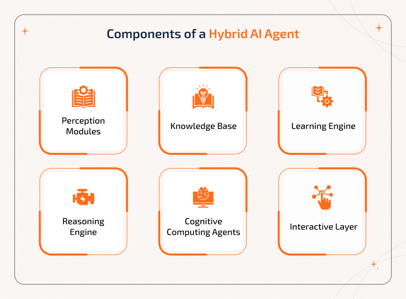
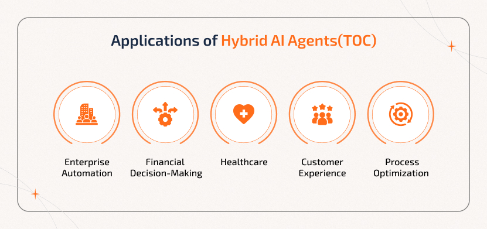
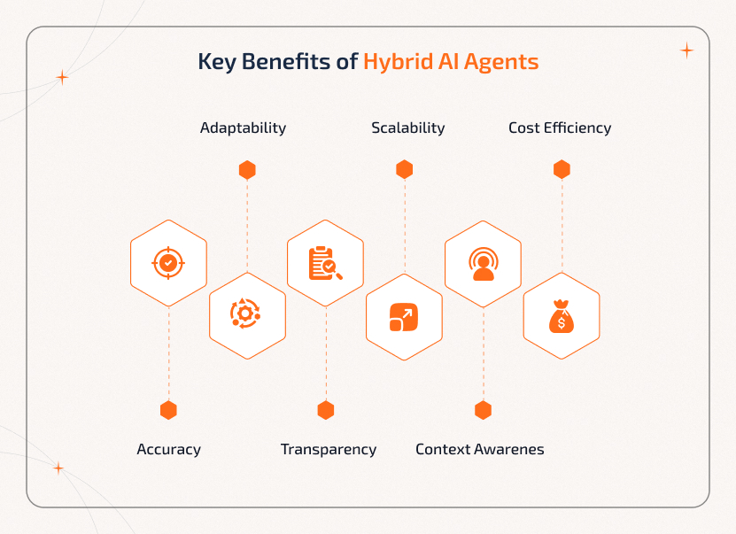
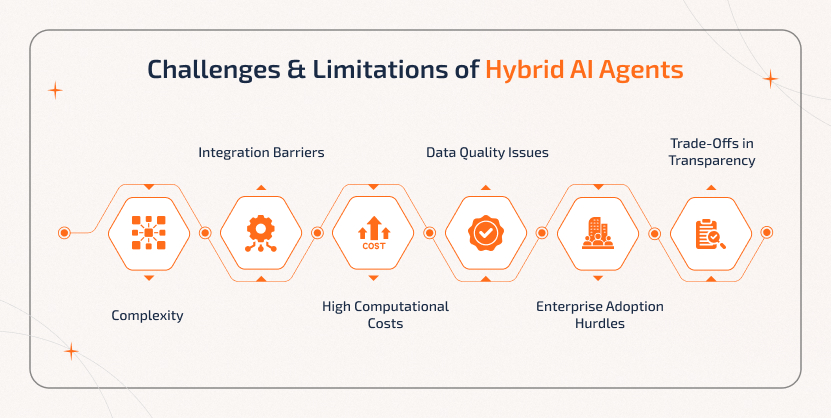
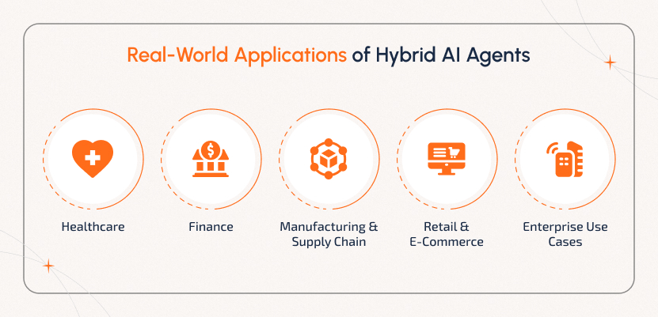

Artificial Intelligence (AI) is no longer about rigid rules & patterns; it is evolving fast. Now, Hybrid AI Agents are leading AI evolution and use precise, logic-driven reasoning with flexible, data-powered machine learning. With this powerful combination, organizations get accuracy and adaptability, making AI smarter, more accurate, and highly practical at scale.
In fact, recent statistics mentioned that about 96% of enterprises are planning to expand the use of AI agents in the coming year, with half of them aiming for organization-wide deployment. These hybrid agents help optimize performance, secure systems, and assist the development teams.
As a result, businesses everywhere, from hybrid AI infrastructure to full-scale enterprise solutions, are adopting these systems to optimize workflows, boost decision-making, and efficiently tackle real-world challenges. In this blog, you will get to know what hybrid AI agents are, how they work, the benefits they offer, where they shine, and how AI agent development is reshaping industries for the future.
What are Hybrid AI Agents - Combining Logic & Learning for Smarter AI
Hybrid Intelligent agents are nothing but advanced systems used to tackle complex problems using different AI techniques, which usually include logic-based reasoning and machine learning.
In other words, one may simply imagine a Hybrid AI agent as a smart problem solver that combines human-like reasoning with data-driven learning. While traditional AI relies only on rules or data, hybrid agents use the best of both approaches.
For instance, a hybrid agent can spot patterns in data like a machine learning system and perform logic rules to handle unclear or incomplete information. This makes them more dependable, especially in ever-evolving areas like healthcare, finance, and enterprise automation.
In short, hybrid agents are nothing but a part of the next generation of AI. By blending cognitive AI and agent-based frameworks, they deliver smarter, more adaptable results.
How Do Hybrid Artificial Intelligence Agents Work?
Hybrid AI agents in such a way they combine rule-based logic with machine learning. In simpler terms, they use structured rules to make clear decisions and learn from data to adapt and predict outcomes.
- Rule-based reasoning offers clear, transparent decision-making.
- Integrating AI and machine learning in hybrid agents adds flexibility and the ability to spot patterns in new data.
Upon combining, these hybrid agents will follow established rules and adapt to new information in real-time.
For example, in a medical diagnosis system, the logic-based system follows the known treatment guidelines while the machine learning part looks for hidden patterns in patient data. This combination makes hybrid Intelligent agents highly versatile and useful across industries like healthcare, finance, and enterprise automation.
Components of a Hybrid AI Agent
Hybrid AI agents work like smart teams, where each part handles a specific role:

1. Perception Modules
Gather information from sensors, user inputs, or
other systems so the agent knows what's happening.
2. Knowledge Base
Stores rules, facts, and structured information that the
agent can refer to when making decisions.
3. Learning Engine
With the help of machine learning, agents detect the
patterns, learn from new data, and improve predictions over time.
4. Reasoning Engine
By applying logical rules, hybrid reasoning AI agents
make clear and consistent decisions based on the knowledge base.
5. Cognitive Computing Agents
This enhances reasoning by understanding
context, solving problems, and making decisions like a human would.
6. Interactive Layer
Allows the agent to communicate with users,
machines, or other agents, making it practical in real-world environments.
All these layers allow hybrid agents to combine learning and logic to operate effectively in diverse settings. This involves automating enterprise tasks or acting as customer-facing intelligent assistants.
Applications of Hybrid AI Agents
Hybrid intelligent agents in AI are becoming highly versatile and changing the way industries operate. Here is how they are being used:

1. Enterprise Automation
Companies use hybrid Artificial Intelligence
agents to streamline workflows and integrate ERP systems. Besides, it is possible to
manage resources more efficiently with the help of hybrid agents.
2. Financial Decision-Making
Banks and fintech sectors use hybrid AI
agents for risk assessment, fraud detection, and smarter financial decisions. Hybrid
AI can be used to flag suspicious transactions in real-time.
3. Healthcare
Hybrid AI supports medical diagnosis and treatment planning.
Hospitals use cognitive agents to get personalized treatment options by analysing
the patient records.
4. Customer Experience
Hybrid agents power chatbots, recommendation
engines, and virtual assistants. Retailers can witness a boost in customer
satisfaction by using hybrid AI for personalized recommendations.
5. Process Optimization
Industries use hybrid AI agents to minimize manual
work and improve efficiency. Besides, the logistics companies can optimize the
delivery routes dynamically with AI reasoning and data analysis.
Hybrid AI agents blend machine learning with rule-based logic to deliver smarter, faster, and more adaptable solutions. Thus, it can work far beyond what traditional AI can achieve.
Our enterprise-grade hybrid AI solutions cut costs, boost efficiency & deliver real results across industries.
Types of Hybrid AI Agents - A Quick Overview
Hybrid AI agents are classified into different types, where each one is designed for specific purposes and applications. Take a closer look at the main categories:
1. Rule + Machine Learning Agents
These agents are a combination of
traditional symbolic rules with supervised or unsupervised learning. They are
reliable and flexible as they usually follow pre-defined rules along with learning
patterns from data. The best example is a fraud detection system will flag
transactions based on rules, but it also adapts by learning from new fraud patterns.
2. Neutral-Symbolic Agents
These integrate neural networks with symbolic
reasoning. Neural networks handle complex pattern recognition while symbolic
reasoning ensures transparency and explainability. This combination is particularly
useful in industries where decisions need to be both accurate and interpretable,
such as finance or healthcare.
3. Adaptive AI Agents
Adaptive agents continuously learn and evolve as new
data comes in. They adjust their behaviour and predictions based on changing
patterns. Thus, they are ideal for dynamic environments such as real-time monitoring
systems, supply chain management, stock trading, etc.
4. Cognitive AI Agents
These agents will mimic human thinking by combining
reasoning, learning, and problem-solving to make complex decisions. This includes
planning treatments in healthcare or strategic decision-making in enterprises.
5. Agent-Based Systems
It includes multiple hybrid agents that work
together as a network. Each agent has specialized capabilities, and collectively
they can solve large-scale problems, coordinate tasks, or simulate real-world
scenarios like smart traffic management or industrial automation.
6. Custom Hybrid AI Frameworks
Enterprises often build tailored hybrid AI
models for domain-specific use cases. These frameworks integrate multiple agent
types and specialized algorithms to meet the unique business needs. It includes
predictive maintenance in manufacturing or personalized recommendations in
e-commerce.
All these types rely on hybrid AI architecture and hybrid AI frameworks by combining logic and learning in a flexible way. This adaptability makes hybrid AI agents useful across various industries, such as automating enterprise operations to enhance customer experience and decision-making.
Key Benefits of Hybrid AI Agents
Hybrid AI agents offer the best of logic and learning to bring in many benefits.

1. Accuracy - Logic-based reasoning helps companies minimize the errors that pure machine learning might make.
2. Adaptability - Hybrid AI agents will keep learning from new data, which makes them more reliable over time.
3. Transparency - With the clear rules, the decisions are easier to explain.
4. Scalability - These hybrid agents are capable of working across industries like finance, healthcare, and logistics.
5. Context Awareness - They are capable of combining the structured rules with real-world context for smarter decisions.
6. Cost Efficiency - By optimizing and automating processes, they help cut down on operational costs.
By having all of these advantages, many businesses started adopting to hybrid AI solutions as a key part of their digital transformation journey.
Challenges & Limitations of Hybrid AI Agents
Despite hybrid AI agents being powerful, they do face challenges that businesses must be aware of:

1. Complexity
Designing and building hybrid systems is not easy. It indeed
requires combining different AI methods, which becomes technically demanding and
time-consuming.
2. Integration Barriers
Symbolic AI that involves rules, logic, and deep
learning with neural networks doesn't always fit together smoothly. Aligning them
will open up the chances to create technical roadblocks.
3. High Computational Costs
Hybrid agents often require large amounts of
computing power for training and ongoing maintenance. This, in turn, increases the
infrastructure costs.
4. Data Quality Issues
If the input data is inaccurate or incomplete,
there is a high chance of obtaining unreliable output from the agents.
5. Enterprise Adoption Hurdles
Most of the organizations hesitate to
adopt hybrid AI due to the high upfront cost, the risk of failure, or a lack of
in-house expertise.
6. Trade-Offs in Transparency
Adaptive agents are known for flexibility.
However, at times, they work like a black box. As a result, it is hard to explain
how a decision was made.
All of the above challenges are not just erasing the value of hybrid AI agents but are highlighting why businesses need the right strategy, expertise, and resources to get the best of them.
Hybrid AI Agents vs Traditional AI: Key Differences
Hybrid AI agents are successfully bridging the gap between rigid rule-based AI and black-box machine learning. Here is a comparison that shows how hybrid agents are more adaptive, explainable, and enterprise-ready.
| Aspect | Rule-Based / Symbolic AI (Traditional) | Pure Machine Learning (Traditional) | Hybrid AI Agents (Modern) |
|---|---|---|---|
| Core Approach | Follows predefined rules & logic (if-then statements) | Learns the patterns from data only | Combines rules + learning for balanced reasoning |
| Pros | Transparent & explainable. Good for compliance | Strong at prediction & handling large data | Explainable & adaptive. Best of both worlds |
| Cons | Inflexible. Can’t handle new or unknown data | Black-box. Lacks reasoning & explainability | Highly effective but more complex to build |
| Adaptability | Low. Needs manual updates for new cases | Medium. Adapts with more data | High. Adapts with rules + real-time learning |
| Decision-Making | Deterministic & rule-bound | Probabilistic & data-driven | Context-aware. Use logic + learning |
| Use Cases | Tax systems, legal compliance, expert systems | Image recognition, recommendation engines | Healthcare diagnosis, fraud detection, enterprise automation |
Best Practices for Implementing Hybrid AI Agents
Integrating hybrid AI agents in enterprises should follow a structured approach that combines both technology and strategy. Hybrid AI systems combine the reasoning ability of symbolic AI with the learning power of machine learning. By following these best practices, organizations can deploy hybrid machine learning agents seamlessly and gain maximum business value.
Start by finding the specific problems that hybrid AI agents can solve, such as fraud detection, supply chain optimization, or customer service automation.
So companies should ask: What problems do we want hybrid AI to solve? It can be anything like reducing operational costs, predicting customer behavior, automating customer support, or making supply chain planning smarter. With well-defined goals, the system delivers real business value with measurable KPIs.
A clearly designed hybrid AI architecture forms the backbone of the system, and it should integrate symbolic reasoning with machine learning. Thus, enterprises should find out whether a centralized, decentralized, or cloud-native model fits their scalability and security needs. The choice depends on the organization's size, data security needs, and long-term scalability.
Building from scratch is costly and risky. Hence, businesses shall use a robust hybrid AI framework that allows easy integration of rule-based systems with learning models. These frameworks make it easier to experiment, integrate, and scale without reinventing the whole process.
The key advantages of hybrid AI agents are that they are more explainable than pure machine learning models. Since enterprises work in regulated industries, hybrid AI agents should be involved in providing transparent decision-making. Clear documentation and regular audits should be a part of the process.
Enterprises operate in evolving environments, and hence, hybrid AI systems should not be rigid. They should be able to scale across departments and adapt to new situations, new data, or rapid market changes. For instance, a retail company will start with hybrid AI in inventory forecasting and can later expand it to customer personalization.
Hybrid AI agents are not meant to replace the human workforce entirely. Rather, they work best when they combine with human expertise. Hence, companies should create feedback loops where human employees can review, validate, and improve the decisions made by AI. With this, the hybrid agent-based systems will become more accurate and build trust amongst the users.
Rolling out a full enterprise-wide hybrid AI system at the very beginning will be hard and complex. The best and most simplified way is to begin with a pilot project in a single department or process.
Upon getting the value and reliability, it can be scaled step-by-step across the organization. This not only lowers the risks but also opens up the learning curve and helps gain support from staff and stakeholders.
We build future-ready hybrid AI agents that combine ML with symbolic reasoning for real impact.
Hybrid AI Agents Use-Cases Transforming Enterprises
Hybrid AI agents are delivering measurable results across industries. Check out the most impactful use cases of hybrid AI agents from the section below:

Hybrid systems are capable of diagnosing diseases with higher precision by up to 20%. This in turn reduces re-admissions by 15% and expedites diagnosis by up to 50% in hospitals. This is achieved by combining medical knowledge bases with patient data analysis.
As per The Guardian, the NHS now uses AI tools in stroke centres that cut time to treatment from 140 to 79 minutes and provide full recovery rates from 16% to 48%.
Banks use hybrid AI agents for financial decision-making in sections like credit scoring, fraud detection, and personalized banking.
This showed an outstanding 99.7% accuracy with F1 scores around 90%. We could find other hybrid systems that reduce false positive rates by 15% and boost overall fraud detection accuracy by 20%.
Hybrid AI automation optimizes supply chains and predictive maintenance. According to reports, AI-powered systems are utilized by 63% of supply chain organizations, which in turn reduces operational costs by 12%, shortens delivery lead times by 25%, and improves forecasting accuracy by 16%.
Intelligent chatbots powered by agent-based AI improve customer experiences. As per Business Insider, AI handling of digital payments helps detect fraud more accurately, which boosts detection rates by up to 300% and reduces false declines from 22% of transactions.
Businesses implementing hybrid AI agents for enterprise will improve productivity, compliance, and reporting. Thus, achieving automation that delivers faster, more accurate business operations.
These stats show that hybrid AI use cases are fuelling real business transformation.
Future of Hybrid AI Agents
The future of hybrid AI agents seems to be promising as they continue to combine with cutting-edge technologies like IoT, blockchain, and cloud computing. This deeper integration will make the hybrid systems not just smarter but also more explainable, scalable, and adaptable for enterprises.
Advances in cognitive computing agents will push them closer to offering human-like reasoning, enabling better problem-solving and contextual understanding. Meanwhile, the adaptive AI agents will enable businesses to react instantly to real-time changes, whether in markets, supply chains, or customer needs.
Looking forward, hybrid agents won't just assist with decision-making, rather, they will increasingly take on autonomous roles in enterprises, finance, and critical infrastructure. This shift allows the organizations to not just rely on hybrid AI but also for driving strategy and execution in ways that were once only imagined.
Why Choose Sparkout for Hybrid AI Agent Development?
At Sparkout Tech, we aim to create future-ready hybrid AI agents that deliver measurable impact for businesses across industries. Hire AI developers from our company as they ensure to blend deep expertise in machine learning, symbolic reasoning, and adaptive AI models to design solutions tailored to your enterprise goals.
- With proven expertise, we are delivering enterprise-grade hybrid AI solutions.
- We use a custom hybrid architecture tailored to your unique business workflows.
- By developing scalable and secure systems, we ensure our solutions handle enterprise demands.
- With cross-industry experience, we deliver hybrid agents from healthcare to finance, retail, and more.
- Our agile, transparent process ensures faster go-to-market with clear communication.
- We offer end-to-end support from consultation to deployment and ongoing optimization.
Partnering with Sparkout means businesses are gaining a long-term innovation partner, helping you stay ahead with cutting-edge hybrid AI technologies.
We create powerful hybrid AI agents that combine reasoning, learning & automation to scale your business faster.
Conclusion
Hybrid AI agents are revolutionizing the way industries take up automation, reasoning, and decision-making. By blending symbolic reasoning with machine learning, it is possible to overcome the limitations of single approach systems. From hybrid AI solutions in finance and healthcare to hybrid AI models in enterprise automation, these agents represent the next stage in AI's evolution.
As businesses continue to explore the applications of hybrid AI agents, hybrid AI architecture will define the future of intelligent systems. Thus, creating more reliable, adaptive, and scalable AI for tomorrow's challenges.